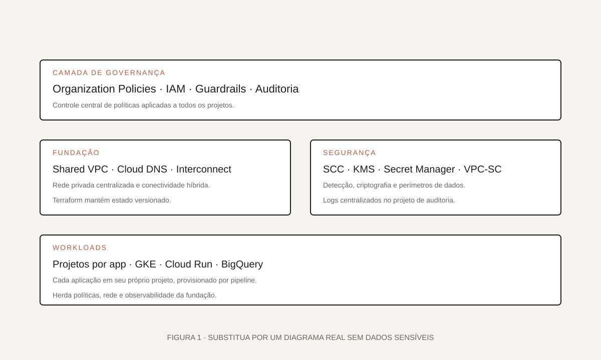

01 · Visão geral
De projetos avulsos a uma fundação corporativa.
A adoção de GCP começou de forma orgânica, com projetos isolados criados sob demanda. O objetivo desta iniciativa foi transformar esse ambiente em uma fundação corporativa auditável, segura e replicável.
[Complete aqui com o cenário público: setor, escala de usuários, times envolvidos e por que a fundação era necessária. Evite nomes internos e dados sensíveis.]
Projetos GCP sem padrão, sem controle de rede central e com governança inconsistente.
Fundação em código com organização, políticas, rede compartilhada e automação de projetos.
Provisionamento padronizado, guardrails aplicados em escala e auditoria centralizada.
02 · O desafio
Governança que precisava chegar antes das aplicações.
Antes do projeto, cada nova iniciativa criava seu próprio projeto GCP com regras diferentes, sem uma rede padrão e sem controles de segurança consistentes. Precisávamos absorver essa realidade sem paralisar quem já estava rodando na cloud.
“Construir uma fundação segura e escalável sem virar um gargalo para os times de desenvolvimento.”
- Alinhar organização, IAM e políticas com o modelo corporativo.
- Padronizar redes VPC compartilhadas e conectividade híbrida.
- Criar guardrails preventivos sem depender de auditoria manual.
- Automatizar o onboarding de novos projetos por pipeline.
03 · Meu papel
Da concepção à padronização.
Liderei o desenho da fundação e escrevi grande parte do IaC compartilhado com outras squads. Coordenei a divisão de responsabilidades entre times de plataforma, segurança e redes.
Arquitetura: desenho da organização, hierarquia de folders, padrões de projeto e rede.
Implementação: módulos Terraform, pipelines de infra e onboarding automatizado de projetos.
Governança: políticas organizacionais, revisão técnica e documentação para times consumidores.
04 · Arquitetura
Camadas independentes, integradas por contrato.
A fundação é composta por camadas com responsabilidades claras. Cada camada evolui em seu próprio ritmo, mas expõe contratos estáveis para as demais.

assets/projetos/arquitetura-fundacao-gcp.svg.Componentes principais
Organização e IAM
Organization Policies, hierarquia de folders, grupos, papéis e SSO integrado ao IdP corporativo.
Rede compartilhada
Shared VPC, Cloud DNS, Cloud NAT e conectividade privada com o on-premises.
Segurança
SCC, KMS, Secret Manager, VPC Service Controls e auditoria centralizada.
Automação
Terraform, pipelines de provisionamento de projetos e templates para squads consumidoras.
05 · Implementação
Entrega em fases, adoção sob controle.
Preferimos entregar valor em fases, com uma primeira versão utilizável logo cedo e evolução contínua guiada pelo feedback das squads.
- 1
Diagnóstico
Mapeamento dos projetos existentes, requisitos regulatórios e dependências com o on-premises.
- 2
Prova de conceito
Validação do modelo de rede compartilhada, políticas críticas e integração com o IdP.
- 3
Construção
Módulos Terraform, guardrails e pipelines de onboarding em produção.
- 4
Adoção
Documentação, treinamento e onboarding das primeiras squads consumidoras.

06 · Decisões técnicas
Escolhas conscientes, com trade-offs claros.
Cada decisão foi tomada considerando o custo de operação e a experiência das squads consumidoras. Documentamos as alternativas para revisar quando o contexto mudar.
07 · Resultados
O que a fundação passou a habilitar.
Além dos ganhos de segurança, a fundação encurtou o tempo de partida de novos projetos e facilitou auditoria e resposta a incidentes.
Todos os novos projetos herdam rede, IAM e políticas base sem intervenção manual.
Menos superfície de exposição e detecção precoce de configurações fora do padrão.
Time-to-provisioning reduzido para as squads consumidoras.
08 · Aprendizados
O que eu manteria — e o que faria diferente.
O maior aprendizado foi tratar a fundação como um produto interno. Isso mudou a forma como priorizamos backlog e como conversamos com as squads.
- Guardrails preventivos evitam retrabalho e discussões após incidente.
- Documentação e exemplos claros são tão importantes quanto o próprio código.
- Faria uma primeira versão do pipeline de onboarding ainda mais enxuta.